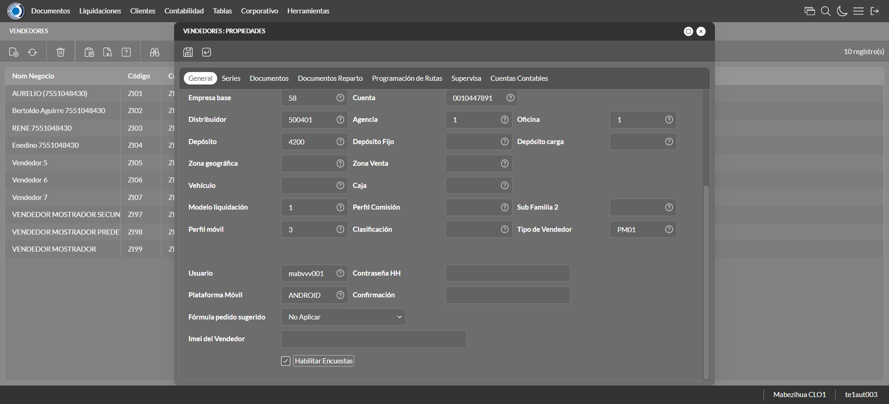
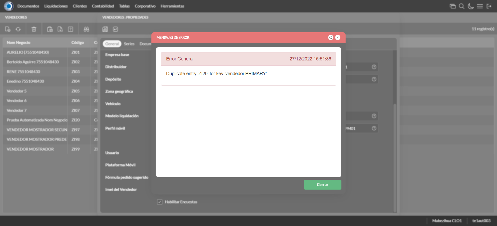
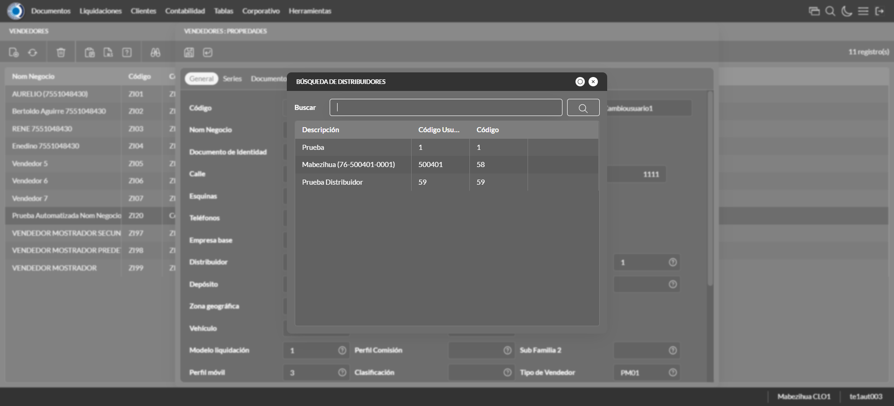

Desarrollado por : Area de Testing PWST
Fecha y hora de inicio : 2022-12-27 09:50:14
Duracion : 0:03:16.127111
Resultado : Total 8，Correctos 4 ，Errores 4 ，Taza de resultado 50.00%
Resumen 50.00% Errores 4 Fallidos 0 Correctos 4 Test realizados 8
| Caso de Prueba | Total | Correctos | Fallido | Error | Detalles | Captura del error |
| Vendedores.Test: Escenario 1 de Vendedores | 8 | 4 | 0 | 4 | Detalles | |
test |
ft1_1: 2022-12-27 09:50:16,358 - root - INFO - Se abre el chrome
2022-12-27 09:50:17,136 - root - INFO - Entra a la URL
2022-12-27 09:50:17,268 - root - INFO - Maximiza la pantalla
Traceback (most recent call last):
File "C:\Users\jsand\AppData\Local\Programs\Python\Python310\lib\site-packages\selenium-4.4.0-py3.10.egg\selenium\webdriver\remote\switch_to.py", line 87, in frame
frame_reference = self._driver.find_element(By.ID, frame_reference)
File "C:\Users\jsand\AppData\Local\Programs\Python\Python310\lib\site-packages\selenium-4.4.0-py3.10.egg\selenium\webdriver\remote\webdriver.py", line 856, in find_element
return self.execute(Command.FIND_ELEMENT, {
File "C:\Users\jsand\AppData\Local\Programs\Python\Python310\lib\site-packages\selenium-4.4.0-py3.10.egg\selenium\webdriver\remote\webdriver.py", line 434, in execute
self.error_handler.check_response(response)
File "C:\Users\jsand\AppData\Local\Programs\Python\Python310\lib\site-packages\selenium-4.4.0-py3.10.egg\selenium\webdriver\remote\errorhandler.py", line 243, in check_response
raise exception_class(message, screen, stacktrace)
selenium.common.exceptions.NoSuchElementException: Message: no such element: Unable to locate element: {"method":"css selector","selector":"[id="mainFrame"]"}
(Session info: chrome=108.0.5359.125)
Stacktrace:
Backtrace:
(No symbol) [0x00A2F243]
(No symbol) [0x009B7FD1]
(No symbol) [0x008AD04D]
(No symbol) [0x008DC0B0]
(No symbol) [0x008DC22B]
(No symbol) [0x0090E612]
(No symbol) [0x008F85D4]
(No symbol) [0x0090C9EB]
(No symbol) [0x008F8386]
(No symbol) [0x008D163C]
(No symbol) [0x008D269D]
GetHandleVerifier [0x00CC9A22+2655074]
GetHandleVerifier [0x00CBCA24+2601828]
GetHandleVerifier [0x00AD8C0A+619850]
GetHandleVerifier [0x00AD7830+614768]
(No symbol) [0x009C05FC]
(No symbol) [0x009C5968]
(No symbol) [0x009C5A55]
(No symbol) [0x009D051B]
BaseThreadInitThunk [0x76796BD9+25]
RtlGetFullPathName_UEx [0x77B58FD2+1218]
RtlGetFullPathName_UEx [0x77B58F9D+1165]
During handling of the above exception, another exception occurred:
Traceback (most recent call last):
File "C:\Users\jsand\AppData\Local\Programs\Python\Python310\lib\site-packages\selenium-4.4.0-py3.10.egg\selenium\webdriver\remote\switch_to.py", line 90, in frame
frame_reference = self._driver.find_element(By.NAME, frame_reference)
File "C:\Users\jsand\AppData\Local\Programs\Python\Python310\lib\site-packages\selenium-4.4.0-py3.10.egg\selenium\webdriver\remote\webdriver.py", line 856, in find_element
return self.execute(Command.FIND_ELEMENT, {
File "C:\Users\jsand\AppData\Local\Programs\Python\Python310\lib\site-packages\selenium-4.4.0-py3.10.egg\selenium\webdriver\remote\webdriver.py", line 434, in execute
self.error_handler.check_response(response)
File "C:\Users\jsand\AppData\Local\Programs\Python\Python310\lib\site-packages\selenium-4.4.0-py3.10.egg\selenium\webdriver\remote\errorhandler.py", line 243, in check_response
raise exception_class(message, screen, stacktrace)
selenium.common.exceptions.NoSuchElementException: Message: no such element: Unable to locate element: {"method":"css selector","selector":"[name="mainFrame"]"}
(Session info: chrome=108.0.5359.125)
Stacktrace:
Backtrace:
(No symbol) [0x00A2F243]
(No symbol) [0x009B7FD1]
(No symbol) [0x008AD04D]
(No symbol) [0x008DC0B0]
(No symbol) [0x008DC22B]
(No symbol) [0x0090E612]
(No symbol) [0x008F85D4]
(No symbol) [0x0090C9EB]
(No symbol) [0x008F8386]
(No symbol) [0x008D163C]
(No symbol) [0x008D269D]
GetHandleVerifier [0x00CC9A22+2655074]
GetHandleVerifier [0x00CBCA24+2601828]
GetHandleVerifier [0x00AD8C0A+619850]
GetHandleVerifier [0x00AD7830+614768]
(No symbol) [0x009C05FC]
(No symbol) [0x009C5968]
(No symbol) [0x009C5A55]
(No symbol) [0x009D051B]
BaseThreadInitThunk [0x76796BD9+25]
RtlGetFullPathName_UEx [0x77B58FD2+1218]
RtlGetFullPathName_UEx [0x77B58F9D+1165]
During handling of the above exception, another exception occurred:
Traceback (most recent call last):
File "C:\xampp\htdocs\versiones\automatizaciones\AutoPWST\01VE\testCase\Vendedores.py", line 36, in test
self.driver.switch_to.frame("mainFrame")
File "C:\Users\jsand\AppData\Local\Programs\Python\Python310\lib\site-packages\selenium-4.4.0-py3.10.egg\selenium\webdriver\remote\switch_to.py", line 92, in frame
raise NoSuchFrameException(frame_reference)
selenium.common.exceptions.NoSuchFrameException: Message: mainFrame
|
|
||||
test_000: Ingresa a la base de datos |
pt1_2: 2022-12-27 09:50:20,526 - root - INFO - Escribe el usuario
2022-12-27 09:50:20,633 - root - INFO - Escribe la contraseña
2022-12-27 09:50:20,726 - root - INFO - Se dio clic en el boton ingresar
2022-12-27 09:50:21,436 - root - INFO - Ejecutar Enterprise
2022-12-27 09:50:25,517 - root - INFO - Cambia entre pestañas
|
|
||||
test_001: Abre menu y ejecuta pantalla |
pt1_3: 2022-12-27 09:50:35,733 - root - INFO - Abre la pantalla de Familias de Impuestos
2022-12-27 09:50:36,312 - root - INFO - La pantalla ejecutada es Familias de Impuestos
2022-12-27 09:50:36,313 - root - INFO - Captura: C:\xampp\htdocs\versiones\automatizaciones\AutoPWST\01VE\report\img screen：20221227_09_50_36.png
2022-12-27 09:50:37,020 - root - INFO - Se da clic en el registro creado, para proceder a modificarlo.
2022-12-27 09:50:37,592 - root - INFO - Se hace el cambio de pestaña para continuar con el registro nuevo
2022-12-27 09:50:43,427 - root - INFO - Se da clic en el registro creado, para proceder a modificarlo.
2022-12-27 09:50:43,492 - root - INFO - Se presiona el boton 'Eliminar', para eliminar el registro.
2022-12-27 09:50:43,621 - root - INFO - Se hace el cambio de pestaña para continuar con el registro nuevo
2022-12-27 09:50:49,465 - root - INFO - Se da clic en el registro creado, para proceder a modificarlo.
2022-12-27 09:50:49,530 - root - INFO - Se presiona el boton 'Eliminar', para eliminar el registro.
2022-12-27 09:50:49,636 - root - INFO - Se hace el cambio de pestaña para continuar con el registro nuevo
2022-12-27 09:50:50,759 - root - INFO - Se da clic en el registro creado, para proceder a modificarlo.
2022-12-27 09:50:50,829 - root - INFO - Se presiona el boton 'Eliminar', para eliminar el registro.
2022-12-27 09:50:50,954 - root - INFO - Se da clic en el boton Guardar; se debe modificar la informacion del registro.
2022-12-27 09:50:51,540 - root - INFO - Se da clic en el registro creado, para proceder a eliminarlo.
2022-12-27 09:50:51,615 - root - INFO - Se presiona el boton 'Eliminar', para eliminar el registro.
2022-12-27 09:50:52,206 - root - INFO - Se confirma el eliminado del registro
2022-12-27 09:50:52,388 - root - INFO - Se presiona el boton 'Refrescar', para crear un nuevo registro igual al anterior.
2022-12-27 09:50:52,508 - root - INFO - Se presiona el boton 'Nuevo', para crear un nuevo registro.
|

|
||||
test_002: Abre la ventana de nuevo y crear un registro |
pt1_4: 2022-12-27 09:50:53,080 - root - INFO - Se abrio la pantalla para el ingreso de un registro nuevo.
2022-12-27 09:50:53,108 - root - INFO - El campo 'Codigo' si se encuentra visible.
2022-12-27 09:50:53,168 - root - INFO - El campo 'Código Alternativo' si se encuentra visible.
2022-12-27 09:50:53,197 - root - INFO - El campo 'Código Usuario' si se encuentra visible.
2022-12-27 09:50:53,225 - root - INFO - El campo 'Nom Negocio' si se encuentra visible.
2022-12-27 09:50:53,254 - root - INFO - El campo 'Documento de Identidad' si se encuentra visible.
2022-12-27 09:50:53,282 - root - INFO - El campo 'Calle' si se encuentra visible.
2022-12-27 09:50:53,311 - root - INFO - El campo 'Nro. Puerta' si se encuentra visible.
2022-12-27 09:50:53,339 - root - INFO - El campo 'Esquinas' si se encuentra visible.
2022-12-27 09:50:53,368 - root - INFO - El campo 'Teléfonos' si se encuentra visible.
2022-12-27 09:50:53,398 - root - INFO - El campo 'Empresa base' si se encuentra visible.
2022-12-27 09:50:53,427 - root - INFO - El campo 'Cuenta base' si se encuentra visible.
2022-12-27 09:50:53,454 - root - INFO - El campo 'Distribuidor base' si se encuentra visible.
2022-12-27 09:50:53,483 - root - INFO - El campo 'Agencia' si se encuentra visible.
2022-12-27 09:50:53,539 - root - INFO - El campo 'Oficina' si se encuentra visible.
2022-12-27 09:50:53,568 - root - INFO - El campo 'Depósito' si se encuentra visible.
2022-12-27 09:50:53,596 - root - INFO - El campo 'Modelo liquidación' si se encuentra visible.
2022-12-27 09:50:53,625 - root - INFO - El campo 'Perfil móvil' si se encuentra visible.
2022-12-27 09:50:53,652 - root - INFO - El campo 'Tipo de Vendedor' si se encuentra visible.
2022-12-27 09:50:53,681 - root - INFO - El campo 'Plataforma Móvil' si se encuentra visible.
2022-12-27 09:50:53,710 - root - INFO - El campo 'Fórmula pedido sugerido' si se encuentra visible.
2022-12-27 09:50:53,738 - root - INFO - El campo 'Habilitar Encuestas' si se encuentra visible.
2022-12-27 09:50:53,786 - root - INFO - Ingresa el codigo del nuevo registro
2022-12-27 09:50:53,857 - root - INFO - Ingresa el codigo alternativo del nuevo registro
2022-12-27 09:50:53,934 - root - INFO - Ingresa el codigo usuario del nuevo registro
2022-12-27 09:50:54,038 - root - INFO - Ingresa el Nom Negocio del nuevo registro
2022-12-27 09:50:54,127 - root - INFO - Ingresa el Documento de Identidad del nuevo registro
2022-12-27 09:50:54,218 - root - INFO - Ingresa la calle del nuevo registro
2022-12-27 09:50:54,314 - root - INFO - Ingresa el nro puerta del nuevo registro
2022-12-27 09:50:54,392 - root - INFO - Ingresa la Esquina 1 del nuevo registro
2022-12-27 09:50:54,468 - root - INFO - Ingresa la Esquina 2 del nuevo registro
2022-12-27 09:50:54,537 - root - INFO - Ingresa el Telefono 1 del nuevo registro
2022-12-27 09:50:54,609 - root - INFO - Ingresa el Telefono 2 del nuevo registro
2022-12-27 09:51:09,319 - root - INFO - Captura: C:\xampp\htdocs\versiones\automatizaciones\AutoPWST\01VE\report\img screen：20221227_09_51_09.png
2022-12-27 09:51:09,570 - root - INFO - Se hace el cambio de pestaña para continuar con el registro nuevo
2022-12-27 09:51:10,148 - root - INFO - Se presiona el boton 'Nuevo', para crear un nuevo registro.
2022-12-27 09:51:10,745 - root - INFO - El campo 'Serie base' si se encuentra visible.
2022-12-27 09:51:10,775 - root - INFO - El campo 'Tipo Impresora' si se encuentra visible.
2022-12-27 09:51:10,805 - root - INFO - El campo 'Puerto Impresora' si se encuentra visible.
2022-12-27 09:51:10,833 - root - INFO - El campo 'Impresora + Lenguaje' si se encuentra visible.
2022-12-27 09:51:10,862 - root - INFO - El campo 'Clave correlativo' si se encuentra visible.
2022-12-27 09:51:10,891 - root - INFO - El campo 'Desde número' si se encuentra visible.
2022-12-27 09:51:10,920 - root - INFO - El campo 'Hasta número' si se encuentra visible.
2022-12-27 09:51:12,746 - root - INFO - Ingresa la Clave Correlativo del nuevo registro
2022-12-27 09:51:12,814 - root - INFO - Ingresa Desde Numero del nuevo registro
2022-12-27 09:51:12,905 - root - INFO - Ingresa Hasta Numero del nuevo registro
2022-12-27 09:51:12,970 - root - INFO - Se presiona el boton 'Guardar', para guardar el registro.
2022-12-27 09:51:13,172 - root - INFO - Se hace el cambio de pestaña para continuar con el registro nuevo
2022-12-27 09:51:13,750 - root - INFO - Se presiona el boton 'Nuevo', para crear un nuevo registro.
2022-12-27 09:51:14,295 - root - INFO - El campo 'Tipo documento' si se encuentra visible.
2022-12-27 09:51:14,328 - root - INFO - El campo 'Modelo de Impresión' si se encuentra visible.
2022-12-27 09:51:16,445 - root - INFO - Se presiona el boton 'Guardar', para guardar el registro.
2022-12-27 09:51:16,646 - root - INFO - Se hace el cambio de pestaña para continuar con el registro nuevo
2022-12-27 09:51:17,221 - root - INFO - Se presiona el boton 'Nuevo', para crear un nuevo registro.
2022-12-27 09:51:17,770 - root - INFO - El campo 'Tipo Documento 2' si se encuentra visible.
2022-12-27 09:51:17,798 - root - INFO - El campo 'Modelo de Impresión' si se encuentra visible.
2022-12-27 09:51:19,974 - root - INFO - Se presiona el boton 'Guardar', para guardar el registro.
2022-12-27 09:51:20,237 - root - INFO - Se da clic en el boton Guardar; se debe crear un nuevo registro.
|
 | ||||
test_003: Repetir el registro creado anteriormente |
pt1_5: 2022-12-27 09:51:20,544 - root - INFO - Se presiona el boton 'Refrescar', para crear un nuevo registro igual al anterior.
2022-12-27 09:51:20,684 - root - INFO - Se presiona el boton 'Nuevo', para crear un nuevo registro igual al anterior.
2022-12-27 09:51:21,255 - root - INFO - Se abrio la pantalla para el ingreso de un registro nuevo.
2022-12-27 09:51:21,339 - root - INFO - El campo 'Codigo' si se encuentra visible.
2022-12-27 09:51:21,383 - root - INFO - El campo 'Código Alternativo' si se encuentra visible.
2022-12-27 09:51:21,414 - root - INFO - El campo 'Código Usuario' si se encuentra visible.
2022-12-27 09:51:21,441 - root - INFO - El campo 'Nom Negocio' si se encuentra visible.
2022-12-27 09:51:21,471 - root - INFO - El campo 'Documento de Identidad' si se encuentra visible.
2022-12-27 09:51:21,499 - root - INFO - El campo 'Calle' si se encuentra visible.
2022-12-27 09:51:21,528 - root - INFO - El campo 'Nro. Puerta' si se encuentra visible.
2022-12-27 09:51:21,559 - root - INFO - El campo 'Esquinas' si se encuentra visible.
2022-12-27 09:51:21,588 - root - INFO - El campo 'Teléfonos' si se encuentra visible.
2022-12-27 09:51:21,617 - root - INFO - El campo 'Empresa base' si se encuentra visible.
2022-12-27 09:51:21,646 - root - INFO - El campo 'Cuenta base' si se encuentra visible.
2022-12-27 09:51:21,675 - root - INFO - El campo 'Distribuidor base' si se encuentra visible.
2022-12-27 09:51:21,704 - root - INFO - El campo 'Agencia' si se encuentra visible.
2022-12-27 09:51:21,733 - root - INFO - El campo 'Oficina' si se encuentra visible.
2022-12-27 09:51:21,760 - root - INFO - El campo 'Depósito' si se encuentra visible.
2022-12-27 09:51:21,788 - root - INFO - El campo 'Modelo liquidación' si se encuentra visible.
2022-12-27 09:51:21,818 - root - INFO - El campo 'Perfil móvil' si se encuentra visible.
2022-12-27 09:51:21,845 - root - INFO - El campo 'Tipo de Vendedor' si se encuentra visible.
2022-12-27 09:51:21,871 - root - INFO - El campo 'Plataforma Móvil' si se encuentra visible.
2022-12-27 09:51:21,899 - root - INFO - El campo 'Fórmula pedido sugerido' si se encuentra visible.
2022-12-27 09:51:21,927 - root - INFO - El campo 'Habilitar Encuestas' si se encuentra visible.
2022-12-27 09:51:21,975 - root - INFO - Ingresa el codigo del nuevo registro
2022-12-27 09:51:22,049 - root - INFO - Ingresa el codigo alternativo del nuevo registro
2022-12-27 09:51:22,126 - root - INFO - Ingresa el codigo usuario del nuevo registro
2022-12-27 09:51:22,228 - root - INFO - Ingresa el Nom Negocio del nuevo registro
2022-12-27 09:51:22,312 - root - INFO - Ingresa el Documento de Identidad del nuevo registro
2022-12-27 09:51:22,410 - root - INFO - Ingresa la calle del nuevo registro
2022-12-27 09:51:22,477 - root - INFO - Ingresa el nro puerta del nuevo registro
2022-12-27 09:51:22,566 - root - INFO - Ingresa la Esquina 1 del nuevo registro
2022-12-27 09:51:22,650 - root - INFO - Ingresa la Esquina 2 del nuevo registro
2022-12-27 09:51:22,725 - root - INFO - Ingresa el Telefono 1 del nuevo registro
2022-12-27 09:51:22,798 - root - INFO - Ingresa el Telefono 2 del nuevo registro
2022-12-27 09:51:36,577 - root - INFO - Se da clic en el boton Guardar; se debe crear un nuevo registro.
2022-12-27 09:51:37,592 - root - INFO - Captura: C:\xampp\htdocs\versiones\automatizaciones\AutoPWST\01VE\report\img screen：20221227_09_51_37.png
2022-12-27 09:51:38,780 - root - INFO - Captura: C:\xampp\htdocs\versiones\automatizaciones\AutoPWST\01VE\report\img screen：20221227_09_51_38.png
2022-12-27 09:51:44,279 - root - INFO - Se presiona el boton 'Cerrar', para cerrar el mensaje de duplicidad de llave primaria
2022-12-27 09:51:45,294 - root - INFO - Captura: C:\xampp\htdocs\versiones\automatizaciones\AutoPWST\01VE\report\img screen：20221227_09_51_45.png
2022-12-27 09:51:45,541 - root - INFO - Se presiona el boton 'Cerrar', para cerrar el mensaje de duplicidad de llave primaria
2022-12-27 09:51:45,659 - root - INFO - Se presiona el boton 'Cerrar', para cerrar la ventana
|
 | ||||
test_004: Modificar el registro |
ft1_6: 2022-12-27 09:51:45,774 - root - INFO - Se presiona el boton 'Refrescar', para crear un nuevo registro igual al anterior.
2022-12-27 09:51:47,422 - root - INFO - Se da clic en el registro creado, para proceder a modificarlo.
2022-12-27 09:51:48,112 - root - INFO - Ingresa el codigo alternativo del nuevo registro
2022-12-27 09:51:48,243 - root - INFO - Ingresa el codigo usuario del nuevo registro
2022-12-27 09:51:48,380 - root - INFO - Ingresa el Nom Negocio del nuevo registro
2022-12-27 09:51:48,492 - root - INFO - Ingresa el Documento de Identidad del nuevo registro
2022-12-27 09:51:48,619 - root - INFO - Ingresa la calle del nuevo registro
2022-12-27 09:51:48,717 - root - INFO - Ingresa el nro puerta del nuevo registro
2022-12-27 09:51:48,827 - root - INFO - Ingresa la Esquina 1 del nuevo registro
2022-12-27 09:51:48,930 - root - INFO - Ingresa la Esquina 2 del nuevo registro
2022-12-27 09:51:49,059 - root - INFO - Ingresa el Telefono 1 del nuevo registro
2022-12-27 09:51:49,154 - root - INFO - Ingresa el Telefono 2 del nuevo registro
2022-12-27 09:52:52,340 - root - ERROR - No se encontró el registro deseado de Distribuidor, validar que la acción anterior haya finalizado,que el xpath sea el correcto o que la página no presente lentitud
2022-12-27 09:52:52,343 - root - INFO - Captura: C:\xampp\htdocs\versiones\automatizaciones\AutoPWST\01VE\report\img screen：20221227_09_52_52.png
2022-12-27 09:53:22,154 - root - INFO - Se presiona el boton 'Cerrar', para cerrar la pantalla.
Traceback (most recent call last):
File "C:\xampp\htdocs\versiones\automatizaciones\AutoPWST\01VE\testCase\Vendedores.py", line 114, in test_004
raise Exception()
Exception
|
 | ||||
test_005: Eliminar el registro creado |
ft1_7: 2022-12-27 09:53:22,279 - root - INFO - Se presiona el boton 'Refrescar', para proceder a eliminar el registro.
2022-12-27 09:53:23,938 - root - INFO - Se da clic en el registro creado, para proceder a eliminarlo.
2022-12-27 09:53:30,782 - root - ERROR - No se dió click al botón Documentos Reparto, validar que la acción anterior haya finalizado,que el xpath sea el correcto o que la página no presente lentitud
2022-12-27 09:53:30,783 - root - INFO - Captura: C:\xampp\htdocs\versiones\automatizaciones\AutoPWST\01VE\report\img screen：20221227_09_53_30.png
Traceback (most recent call last):
File "C:\xampp\htdocs\versiones\automatizaciones\AutoPWST\01VE\testCase\eliminarregistro.py", line 57, in eliminarregistro
Bdocreparto = self.wait.until(conditions.visibility((By.XPATH, Configuracion.btn_documentoreparto)))
File "C:\Users\jsand\AppData\Local\Programs\Python\Python310\lib\site-packages\selenium-4.4.0-py3.10.egg\selenium\webdriver\support\wait.py", line 81, in until
value = method(self._driver)
File "C:\Users\jsand\AppData\Local\Programs\Python\Python310\lib\site-packages\selenium-4.4.0-py3.10.egg\selenium\webdriver\support\expected_conditions.py", line 125, in _predicate
return _element_if_visible(driver.find_element(*locator))
File "C:\Users\jsand\AppData\Local\Programs\Python\Python310\lib\site-packages\selenium-4.4.0-py3.10.egg\selenium\webdriver\remote\webdriver.py", line 856, in find_element
return self.execute(Command.FIND_ELEMENT, {
File "C:\Users\jsand\AppData\Local\Programs\Python\Python310\lib\site-packages\selenium-4.4.0-py3.10.egg\selenium\webdriver\remote\webdriver.py", line 434, in execute
self.error_handler.check_response(response)
File "C:\Users\jsand\AppData\Local\Programs\Python\Python310\lib\site-packages\selenium-4.4.0-py3.10.egg\selenium\webdriver\remote\errorhandler.py", line 243, in check_response
raise exception_class(message, screen, stacktrace)
selenium.common.exceptions.NoSuchWindowException: Message: no such window: target window already closed
from unknown error: web view not found
(Session info: chrome=108.0.5359.125)
Stacktrace:
Backtrace:
(No symbol) [0x00A2F243]
(No symbol) [0x009B7FD1]
(No symbol) [0x008AD04D]
(No symbol) [0x00892D7A]
(No symbol) [0x008FBE7B]
(No symbol) [0x0090C196]
(No symbol) [0x008F8386]
(No symbol) [0x008D163C]
(No symbol) [0x008D269D]
GetHandleVerifier [0x00CC9A22+2655074]
GetHandleVerifier [0x00CBCA24+2601828]
GetHandleVerifier [0x00AD8C0A+619850]
GetHandleVerifier [0x00AD7830+614768]
(No symbol) [0x009C05FC]
(No symbol) [0x009C5968]
(No symbol) [0x009C5A55]
(No symbol) [0x009D051B]
BaseThreadInitThunk [0x76796BD9+25]
RtlGetFullPathName_UEx [0x77B58FD2+1218]
RtlGetFullPathName_UEx [0x77B58F9D+1165]
During handling of the above exception, another exception occurred:
Traceback (most recent call last):
File "C:\xampp\htdocs\versiones\automatizaciones\AutoPWST\01VE\testCase\Vendedores.py", line 123, in test_005
success = eliminarregistro.eliminarregistro(self, conditions, Configuracion)
File "C:\xampp\htdocs\versiones\automatizaciones\AutoPWST\01VE\testCase\eliminarregistro.py", line 67, in eliminarregistro
self.driver.get_screenshot_as_file(img_name)
File "C:\Users\jsand\AppData\Local\Programs\Python\Python310\lib\site-packages\selenium-4.4.0-py3.10.egg\selenium\webdriver\remote\webdriver.py", line 927, in get_screenshot_as_file
png = self.get_screenshot_as_png()
File "C:\Users\jsand\AppData\Local\Programs\Python\Python310\lib\site-packages\selenium-4.4.0-py3.10.egg\selenium\webdriver\remote\webdriver.py", line 963, in get_screenshot_as_png
return b64decode(self.get_screenshot_as_base64().encode('ascii'))
File "C:\Users\jsand\AppData\Local\Programs\Python\Python310\lib\site-packages\selenium-4.4.0-py3.10.egg\selenium\webdriver\remote\webdriver.py", line 975, in get_screenshot_as_base64
return self.execute(Command.SCREENSHOT)['value']
File "C:\Users\jsand\AppData\Local\Programs\Python\Python310\lib\site-packages\selenium-4.4.0-py3.10.egg\selenium\webdriver\remote\webdriver.py", line 434, in execute
self.error_handler.check_response(response)
File "C:\Users\jsand\AppData\Local\Programs\Python\Python310\lib\site-packages\selenium-4.4.0-py3.10.egg\selenium\webdriver\remote\errorhandler.py", line 243, in check_response
raise exception_class(message, screen, stacktrace)
selenium.common.exceptions.NoSuchWindowException: Message: no such window: target window already closed
from unknown error: web view not found
(Session info: chrome=108.0.5359.125)
Stacktrace:
Backtrace:
(No symbol) [0x00A2F243]
(No symbol) [0x009B7FD1]
(No symbol) [0x008AD04D]
(No symbol) [0x00892D7A]
(No symbol) [0x008FBE7B]
(No symbol) [0x0090C196]
(No symbol) [0x008F8386]
(No symbol) [0x008D163C]
(No symbol) [0x008D269D]
GetHandleVerifier [0x00CC9A22+2655074]
GetHandleVerifier [0x00CBCA24+2601828]
GetHandleVerifier [0x00AD8C0A+619850]
GetHandleVerifier [0x00AD7830+614768]
(No symbol) [0x009C05FC]
(No symbol) [0x009C5968]
(No symbol) [0x009C5A55]
(No symbol) [0x009D051B]
BaseThreadInitThunk [0x76796BD9+25]
RtlGetFullPathName_UEx [0x77B58FD2+1218]
RtlGetFullPathName_UEx [0x77B58F9D+1165]
|

|
||||
test_006: Cerrar_Navegador |
ft1_8: Traceback (most recent call last):
File "C:\xampp\htdocs\versiones\automatizaciones\AutoPWST\01VE\testCase\Vendedores.py", line 139, in test_006
self.driver.close()
File "C:\Users\jsand\AppData\Local\Programs\Python\Python310\lib\site-packages\selenium-4.4.0-py3.10.egg\selenium\webdriver\remote\webdriver.py", line 551, in close
self.execute(Command.CLOSE)
File "C:\Users\jsand\AppData\Local\Programs\Python\Python310\lib\site-packages\selenium-4.4.0-py3.10.egg\selenium\webdriver\remote\webdriver.py", line 434, in execute
self.error_handler.check_response(response)
File "C:\Users\jsand\AppData\Local\Programs\Python\Python310\lib\site-packages\selenium-4.4.0-py3.10.egg\selenium\webdriver\remote\errorhandler.py", line 243, in check_response
raise exception_class(message, screen, stacktrace)
selenium.common.exceptions.NoSuchWindowException: Message: no such window: target window already closed
from unknown error: web view not found
(Session info: chrome=108.0.5359.125)
Stacktrace:
Backtrace:
(No symbol) [0x00A2F243]
(No symbol) [0x009B7FD1]
(No symbol) [0x008AD04D]
(No symbol) [0x00892D7A]
(No symbol) [0x008FBE7B]
(No symbol) [0x0090181E]
(No symbol) [0x008F8553]
(No symbol) [0x008D163C]
(No symbol) [0x008D269D]
GetHandleVerifier [0x00CC9A22+2655074]
GetHandleVerifier [0x00CBCA24+2601828]
GetHandleVerifier [0x00AD8C0A+619850]
GetHandleVerifier [0x00AD7830+614768]
(No symbol) [0x009C05FC]
(No symbol) [0x009C5968]
(No symbol) [0x009C5A55]
(No symbol) [0x009D051B]
BaseThreadInitThunk [0x76796BD9+25]
RtlGetFullPathName_UEx [0x77B58FD2+1218]
RtlGetFullPathName_UEx [0x77B58F9D+1165]
|
|
||||
| Caso de prueba | 8 | 4 | 0 | 4 | Taza de resultado：50.00% | |